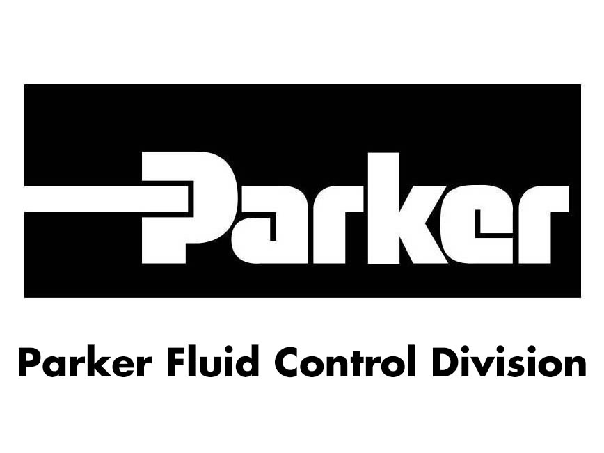

Design & Manufacturing Intern - Parker Hannifin
Summer 2026 (Incoming)
Core Skills: Mechanical Design, Manufacturing Engineering, CAD, Design for Manufacturing
- Incoming Design and Manufacturing Intern, applying skills in CAD, simulation, and manufacturing workflows within a global motion and control technologies company.